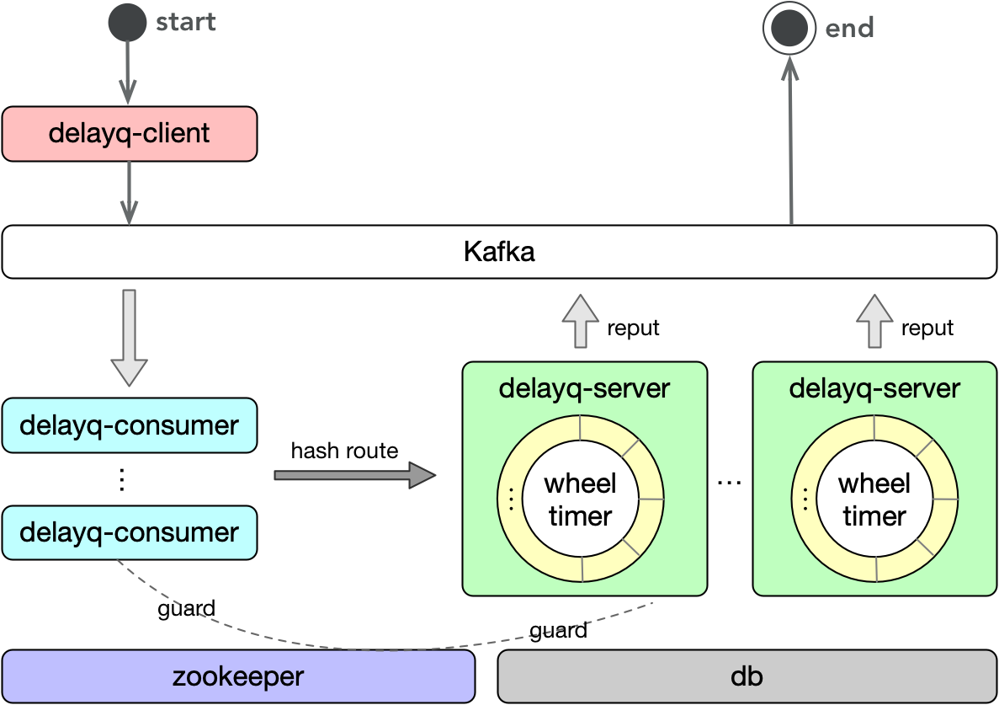
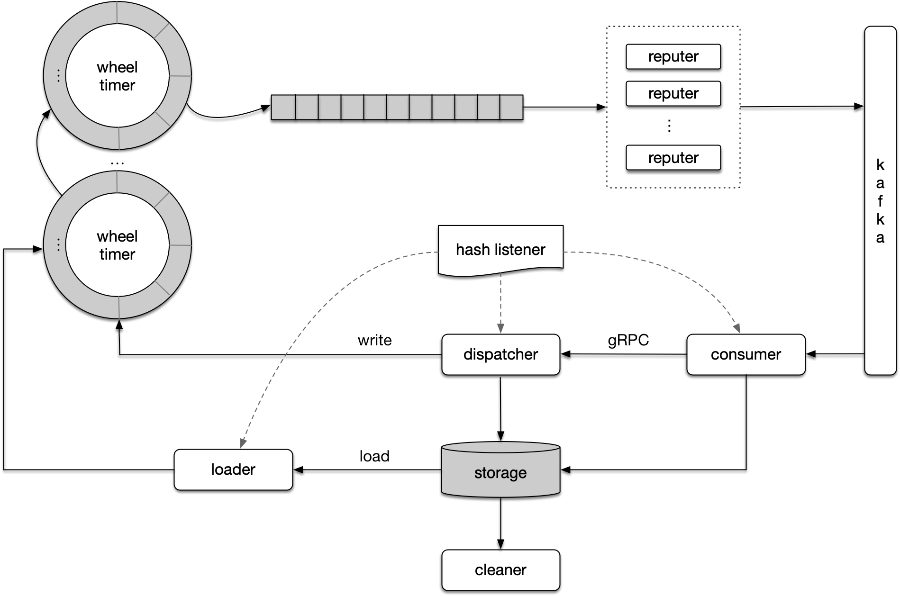

延时/定时队列
延时/定时消息是指生产者(producer)发送消息到server后，server并不将消息立即发送给消费者(consumer)，而是在producer指定的时间之后送达。
比如在电商交易中，经常有这样的场景：下单后如果半个小时内没有支付，自动将订单取消。那么如果不使用延时/定时消息，则一般的做法是使用定时任务定期扫描订单状态表，如果半个小时后订单状态还未支付，则将订单取消。而使用延时/定时消息实现起来更高效更优雅：用户下单后，发送一个延时消息，指定半个小时后消息送达，那么消费者在半个小时后收到消息就查询消息状态，如果这个时候订单是未支付状态，则取消订单。
Kafka是目前行业使用最广泛的消息队列之一，大部分业务系统中都会部署kafka作为消息队列来实现异步解耦，但是kafka本身并不支持延时投递的能力。RocketMq是阿里基于kafka的理念用java实现的一个消息队列，在开源版本中它也只支持了某几个特定时长的延时投递，满足不了大部分业务场景。因此我们基于kafka实现了自研的延时消息队列，该延时队列基于Kafka扩展，使用方只需对接kafka接口，而无需关心延时队列服务的存在，接入方便快捷。
架构设计

消息流转

发送延时消息
延时消息是指消息在当前时间之后一段时间后发送（以发送方本地时间为准）。
发送定时消息
定时消息是指指定消息的发送时间（以delayq-server的时间为准）。
序列化
生产者的value-serializer必须是：com.netease.ysf.delayq.DelayMsg2JsonSerializer
消费者的value-deserializer必须是：org.apache.kafka.common.serialization.StringDeserializer
时间信息
延时消息的消费方可以通过KafkaMessage的header（kafka版本>=0.11）获得与消息有关的时间信息